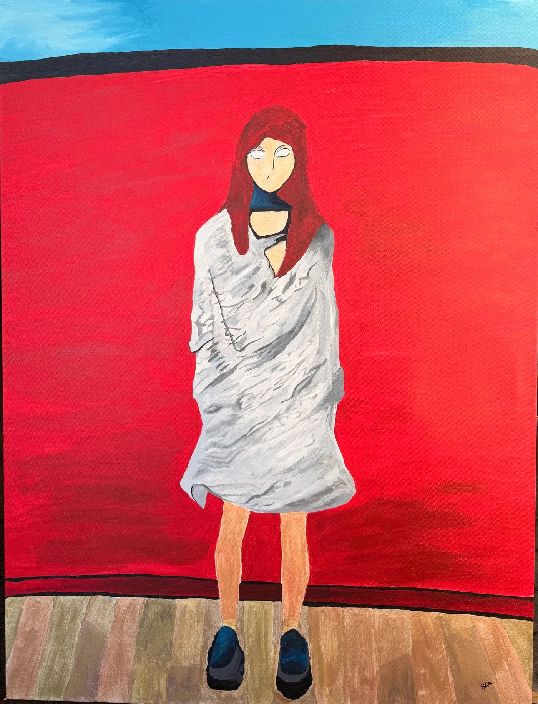

A WORLD OF MY OWN

01 / THE RED DOLL
THE ORIGINAL / SUSIDLCA note:
Music and reflection come from the same place.
I compose music, paint, write, and transform personal experiences into stories told through sound
01 / THE LISTENING ROOM↗
Albums, songs, and the stories behind them.
MUSIC / STEP INSIDE02 / PAN DE CADA DÍA↗
UN ESPACIO PARA LA REFLEXIÓNUna pausa.
Una pausa.
Una lectura.
Las Moradas de Santa Teresa de Jesús.
Texto original y adaptado.
PAN DE CADA DÍA / ENTRAR